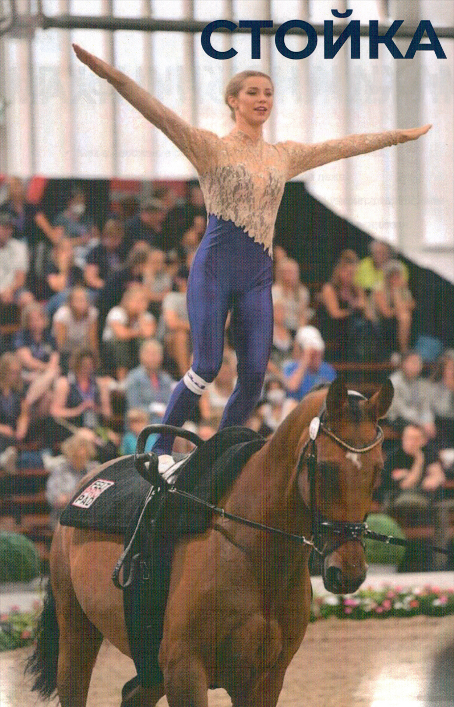
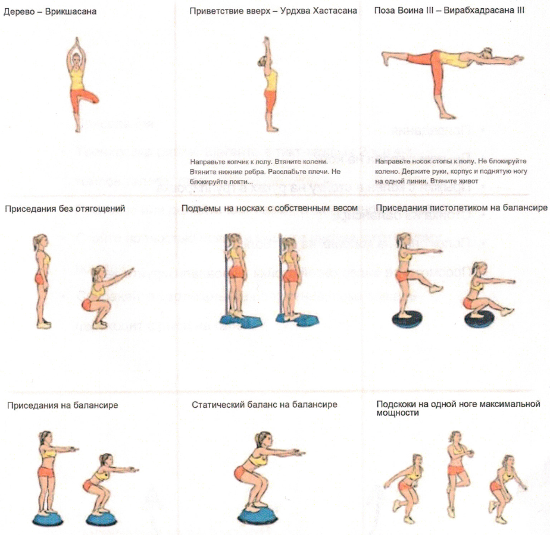

Нажмите на фото, чтобы увеличить
Из положения седа лицом вперед вольтижер плавно переходит в положение на коленях обеими ногами одновременно, а затем мягко прыгает на обе стопы. На протяжении всего этого движения вольтижер держит голову поднятой, глядя вперед.
Во время выполнения упражнения стопы остаются плотно прижатыми, с равномерным распределением веса по всей площади каждой стопы. Стопы расположены близко друг к другу, на ширине бедер, и направлены вперед.
По мере того как вольтижер поднимается в высокое положение стоя, он одновременно отпускает ручки гурты. Это приводит к образованию прямой линии, которая проходит от плеча, через бедро, до пятки. Вольтижер немедленно вытягивает руки, разводя их в стороны во фронтальной плоскости, так, чтобы кончики пальцев достигали уровня глаз.
По завершении этого статического упражнения вольтижер опускает руки вдоль тела и одновременно берется за ручки гурты обеими руками. Вольтижер сохраняет взгляд, направленный вперед, с поднятой головой, плавно скользя в сед лицом вперед, сохраняя ноги прямыми.
